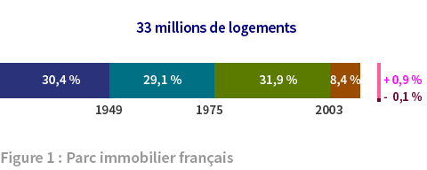

4. Usages
L’énergie dans l’habitat est un des leviers d’action très souvent cité pour réduire la consommation globale d’énergie et l’émission de gaz carbonique. Les nouvelles constructions ou les nouveaux quartiers à haute efficacité énergétique (basse consommation voire énergie positive), seraient-ils la solution comme on nous l’annonce? Peut-être mais seulement pour partie. La réduction des émissions de gaz carbonique dans l’habitat nécessitera d’autres mesures que la seule diminution de la consommation d’énergie — que ce soit dans le parc nouveau ou en rénovation — et réduire la consommation d’énergie fossile demandera du temps et de l'argent.

En effet, les constructions étant faites pour durer, le parc immobilier se renouvelle lentement. Le graphique montre l’âge des constructions du parc français avec une longueur de barre proportionnelle au pourcentage du parc construit dans une période donnée. La tranche détachée à droite montre la part de constructions nouvelles par an (0,9%) et de destructions de logements vétustes (0,1%). A ce rythme, il faudrait plus d’un siècle pour généraliser les nouvelles constructions. Aussi, l’amélioration du parc existant est incontournable et prioritaire pour obtenir un réel effet.
Ce parc compte 33 millions de logements d’une taille moyenne de 90 m2. Compte tenu des logements vacants et résidences secondaires, on estime à 29 millions le nombre de logements occupés à plein temps. Aujourd'hui on compte 2,3 habitants par logement de 90 m2 en moyenne alors qu'en 1976, il y avait 2,9 habitants par logement de 73 m2 en moyenne.
La puissance consommée dans l’habitat s’élève à 55,6 GW (487 TWh/an). Le gaz et l’électricité constituent les deux principales sources d’approvisionnement et totalisent plus de la moitié de l'énergie finale consommée. Les renouvelables apportent une contribution significative grâce au bois de chauffage, au solaire thermique ou à la géothermie. Les maisons individuelles, plus de la moitié du parc, sont les mieux placées pour exploiter ces ressources et des mesures nouvelles devraient en encourager beaucoup plus l’emploi. Les réseaux de chaleur sont significatifs bien que limités à l’habitat collectif urbain.
Du côté des utilisations, le chauffage et l’eau chaude sanitaire sont les principaux postes et représentent les trois quarts de la puissance consommée. L’électricité spécifique, 20% de la consommation, regroupe tous les usages que seule l’électricité peut satisfaire : réfrigération, éclairage, électroménager et électronique grand public. Sa consommation ne diminuera pas dans les années qui viennent.
Au vu de cet état des lieux, quels doivent être les choix de transformations des habitats et des habitudes qui tous deux demanderont du temps et des efforts des particuliers et de la puissance publique ?
Pour répondre à cette question, un état des lieux global ne suffit pas, il faut un état propre à chaque logement. L’instauration du Diagnostic de Performance Energétique (DPE) est une avancée dans cette direction. Rendu obligatoire lors de la mise en vente ou de la location d’un logement, le DPE donne une évaluation de l’impact énergétique et environnemental du logement pour son chauffage et son eau chaude sanitaire dans des conditions normalisées d’usage, postes qui représentent plus de 80% en moyenne de la consommation (figure 3). Le réseau d’experts en diagnostic EX’IM, a établi un bilan des DPE réalisés pour 150.000 logements 1. Les deux résultats principaux qui résument l’impact du logement sont sa consommation d’énergie et l’émission de CO2 qui en résulte. Pour permettre la comparaison, ces quantités calculées pour une année sont rapportés au m2 de logement.
La réglementation (RT 2012) définit la conduite du diagnostic. Pour la consommation d’énergie, outre des conditions normalisée d’usage pour le confort intérieur (19°C par exemple), il précise une règle peu intuitive sur l’évaluation de la consommation d’énergie. Cette évaluation porte non pas sur la consommation réelle du logement — le nombre de kWh que l’habitant lit sur sa facture de gaz ou d’électricité — mais sur son reflet en consommation d’énergie primaire, évalué en multipliant la consommation réelle par un coefficient :
Le diagnostic donne un nombre de kWhEP comme résultat de ce calcul. Cette règle ayant été précisée 2, la suite présente les résultats de l’étude EX’IM pour les deux aspects Energie et Climat.
La figure 4 présente la consommation d’énergie primaire évaluée en kWhEP/an/ m2 et l’impact climatique avec l’émission de CO2 par m2. Pour l’énergie primaire, l’échelle verticale colorée indique les notes de A à G spécifiées par la réglementation pour les valeurs de consommation des plus faibles au plus fortes : de A pour moins de 50 kWhEP/an/ m2 à G pour plus de 450 kWhEP/an/ m2 avec tous les échelons intermédiaires. Le graphique utilise une échelle linéaire qui permet de rendre compte des proportions. Sur ce point, il est différent de l’étiquette énergie utilisée le DPE et montrée les vitrines d’agences immobilières. Tout le reste suit la réglementation : la notation de A à G, les valeurs de consommation qui séparent une note de la suivante, et même les couleurs choisies pour les notes [2].
Le bilan pour l’ensemble des 150.000 logements diagnostiqués par EX’IM donne une moyenne de consommation d’énergie primaire s’élevant à 270 kWhEP/an/ m2, ce qui donne la note E. Ceci situe le logement moyen près de l’appellation d’énergivore, d’après l’étiquette énergie. La répartition des logements dans les différentes notes est représentée par l’histogramme situé en bas. Les notes A et B sont quasiment non représentées. Les logements se situent pour 87% dans les catégories supérieures à C, avec une majorité dans les catégories D et E, remplies à peu près également et représentant 63% au total.
Pour l’impact climatique, la notation de A à G est déterminée par l’émission de CO2 en kgeq CO2 /an/ m2 allant pour A de moins de 5 à plus de 80 pour G. La valeur moyenne des diagnostics s’élève à 35 kgeq CO2 /an/ m2 ce qui situe le niveau moyen à la limite entre D et E. La répartition des logements dans les différentes notes de A à G est indiquée dans l’histogramme du bas. La note B est bien représentée (11%). La répartition présente un pic à la note C (28%) puis descend régulièrement vers la note G. 3
Pour fonder un jugement mesuré, le locataire ou acquéreur d’un logement doit connaître les résultats de la comparaison entre les modes de chauffage, tant pour la dépense d'énergie que pour l'empreinte carbone. Ces résultats qui se trouvent dans le bilan d’EX’IM, sont rapportés dans la figure 5.
Premier volet, à gauche : l’échelle d’énergie primaire situe les valeurs de consommation de la moyenne des logements chauffés au gaz (étiquette verte indiquant 221 kWhEP/ m2/an, soit la note D) et de ceux chauffés à l’électricité (étiquette bleue indiquant 299, note E). Pour mémoire la moyenne de l’ensemble des logements se situe à 270. Le logement chauffé au gaz arrive en tête grâce à sa moindre consommation d’énergie primaire. La distribution du haut s’y rattache et celle du bas se rapporte à l’électricité. Les deux répartitions sont semblables, symétriques par rapport à la note moyenne, et sont déplacées de D à E entre chauffage au gaz et chauffage électrique.
Deuxième volet : la consommation effective d’énergie du logement, celle que l’habitant lirait sur sa facture. Pour l’évaluer, il suffit de faire l’opération inverse des DPE en application de la RT 2012 : partant de la quantité d’énergie primaire indiquée par le DPE, la diviser par le coefficient appliqué au mode de chauffage pour trouver la consommation effective. Dans le cas du gaz, il n’y a pas de changement. Dans le cas de l’électricité, la division de l’énergie primaire par 2,58 aboutit à la consommation effective. Le classement des deux logements est alors inverse du précédent : le logement chauffé à l'électricité consomme moins (130 kWh/ m2/an) que celui équipé au gaz (221). La consommation inférieure des logements électriques provient d'une meilleure isolation et d'une plus grande souplesse de réglage du chauffage des pièces suivant leur usage.
Troisième volet : l’impact climatique des logements. La moyenne des diagnostics des logements « électriques » se situe à 17 kg CO2/an/ m2 (note C) et celle des logements « gaz » à 50 (note E), soit entre les deux un rapport du simple au triple des émissions de CO2. L’histogramme associé au logement électrique, situé en haut du graphique, présente une distribution symétrique avec un pic très marqué en C. Pour le logement au gaz, la répartition est plus étalée et décalée en E.
Au final, si l'étiquette énergie situe en premier le logement chauffé au gaz comme moins dépensier en énergie primaire, le logement électrique consomme en fait moins d’énergie effective, celle relevée par l’habitant. Le logement électrique se détache nettement du logement au gaz pour les émissions de CO2 (- 66%).
La réglementation thermique place la priorité sur la réduction de la consommation d’énergie primaire et multiplie la consommation électrique par 2,58 pour calculer la performance énergétique du logement. Au premier abord, on peut penser que la résistance chauffante n’est pas idéale et inciter à utiliser autant que possible des pompes à chaleur plus performantes. Faut-il pour autant se priver de l’usage de la résistance chauffante pour le chauffage ou pour l’eau chaude sanitaire ? C'est à quoi la règlementation aboutit avec un développement massif du chauffage au gaz dans les logements neufs ces deux dernières années alors même que ce chauffage entraîne une augmentation des émissions de CO2
L’étude EX’IM donne des résultats pour considérer la question.
1. Le logement électrique se révèle en moyenne plus économe en énergie que le logement au gaz. C'est le résultat du signal prix, cher aux économistes, qui a poussé à investir sur l’isolement des logements tout électrique compte tenu du prix plus élevé du kWh.
2. Le coût guide les choix du consommateur. Aussi est-il troublé par la multiplication artificielle de la consommation électrique dans le diagnostic de performance énergétique. Le propriétaire d’un logement peine à comprendre le résultat du DPE comme le montrent les forums internet dédiés à ces questions.
3. Est-il pertinent de fixer à 50 ou moins la consommation d’énergie primaire pour les nouveaux logements et à 80 pour la rénovation, au vu des valeurs actuelles du parc ? Le saut de quatre à un est considérable, surtout en affectant un coefficient multiplicateur de 2,58 à la consommation électrique. Des objectifs ambitieux peuvent avoir un rôle incitatif sur la recherche et l’innovation, mais fixer à tous une barre trop haute peut coûter cher aux particuliers et à la puissance publique. Pour prendre une image, si la F1 peut amener des innovations en matière automobile, la voiture moyenne n’a pas les performances d’une F1.
4. Une autre voie de réduction de la facture énergétique globale et des émissions de CO2 emprunte une réhabilitation raisonnée des logements moyens qui atteigne des résultats apparemment moins ambitieux individuellement mais gagnant collectivement par leur multiplication. Au lieu de s'astreindre à un objectif hors de portée du plus grand nombre, elle s'emploie, à partir d'une étude de l'état initial de chaque logement, à identifier, hiérarchiser puis sélectionner les travaux à engager prioritairement, pour franchir une étape sur la voie de progrès du logement. Cette étape doit être pensée pour permettre des étapes ultérieures qui s'ajoutent et ne reviennent pas sur les travaux déjà accomplis.
5. L'observation des retours d'expérience est utile avant de généraliser par la loi. Si on veut réduire les émissions de CO2, les résultats EX’IM montrent un levier intéressant : le rapport du simple au triple de l’émission de CO2 entre les logements chauffés à l’électricité et ceux chauffés au gaz en France comme dans les pays où l’électricité est produite par des sources non fossiles : Suisse, Suède ou Norvège. Si on veut réduire les émissions de CO2 pourquoi ne pas encourager le chauffage électrique dans ces pays? Il faudrait au moins ne pas en dissuader comme le fait la réglementation française actuelle. Les polluants atmosphériques résultant des combustions sont une autre raison de réfléchir à deux fois au mode de chauffage privilégié pour les villes qui souffrent de problèmes de pollution. ◊
Auteurs: Christian Le Brun et Dominique Grand
EX'IM® (Les experts en Diagnostic Immobilier) Les performances énergétiques des logements français. Etude statistique menée par EX'IM sur la base de plus de 150 000 Diagnostics de Performance Energétique. Octobre 2011. ↑
Plus d’explications sont données dans la page : Derrière l’étiquette Energie du DPE. ↑
EX'IM®, ibid p.5 source de la figure 4. ↑